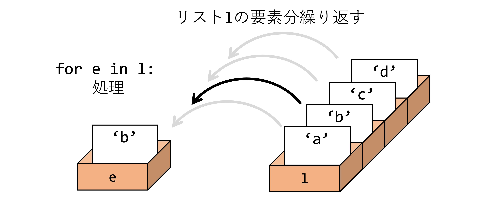
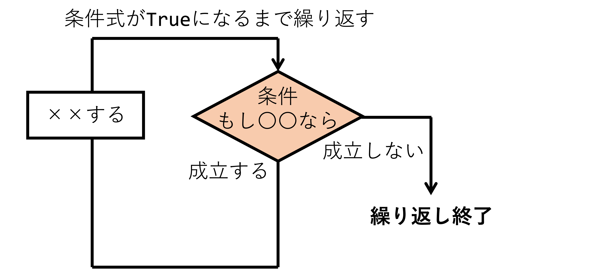
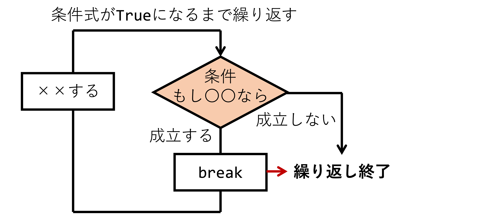
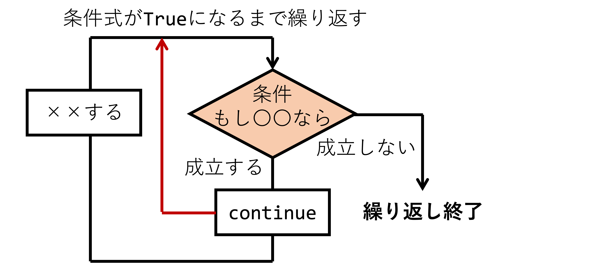

繰り返し処理（講義）#
担当：相澤宏旭
内容#
繰り返し処理では，ある処理を条件式に基づき繰り返す処理について学ぶ．プログラムにおいて繰り返し処理は複数のデータ値を持つ変数に対する演算，ユーザ入力の待機時間の実装など様々な場面で利用される．さらに，第4回で学んだ条件分岐と組み合わせることで繰り返し処理を停止させたり，繰り返される処理を制御できる．このような処理はPythonではfor文やwhile文で実装できる．具体的に，これらの文法について以下を学ぶ．
一定回数繰り返すまたは条件に応じて処理を反復するための，for文とwhile文の基本文法を理解する．
繰り返し処理を強制的に制御するbreakとcontinueの文法を学び，その動作を確認する．
Pythonに実装されているより実用的な繰り返し処理を学ぶ．
繰り返し処理とは？#
繰り返し処理とは，言葉の通り，ある処理を複数回繰り返す処理である．プログラムにおいて繰り返し処理は複数のデータ値を持つ変数に対する演算，ユーザ入力の待機時間の実装など様々な場面で利用される．また，条件分岐と組み合わせることで繰り返し処理を停止させたり，繰り返される処理を制御できるようになる．何より，複数回同じプログラムを記述する必要がなくなるため，コードの可読性を改善し，コード量も減らすことができる．
繰り返し処理の利用場面#
第2回の講義で学んだリストの各要素に対して何らかの処理を加えてprintで出力する場面を考える．例えば，以下のような曜日の文字列が格納されたリストを与えられ，今日は...ですと要素を出力することを考える．このとき繰り返し処理を知らないならば以下のような出力方法が考えられる．
days = ['Monday', 'Tuesday', 'Wednesday', 'Thursday', 'Friday', 'Saturday', 'Sunday']
print(f'今日は{days[0]}です')
print(f'今日は{days[1]}です')
print(f'今日は{days[2]}です')
print(f'今日は{days[3]}です')
print(f'今日は{days[4]}です')
print(f'今日は{days[5]}です')
print(f'今日は{days[6]}です')
今日はMondayです
今日はTuesdayです
今日はWednesdayです
今日はThursdayです
今日はFridayです
今日はSaturdayです
今日はSundayです
このように愚直にprint文を要素数だけ記述すると各要素に対して何らかの演算と出力できる．続いて，平日の場合は...は平日です，休日の場合は...は休日ですと出力することを考える．同様にprint文を使って以下のように書ける．
print(f'{days[0]}は平日です')
print(f'{days[1]}は平日です')
print(f'{days[2]}は平日です')
print(f'{days[3]}は平日です')
print(f'{days[4]}は平日です')
print(f'{days[5]}は休日です')
print(f'{days[6]}は休日です')
Mondayは平日です
Tuesdayは平日です
Wednesdayは平日です
Thursdayは平日です
Fridayは平日です
Saturdayは休日です
Sundayは休日です
しかしながら，このようなprint文による処理は問題がある．わかりやすい問題点をいくつか述べると，1つ目に要素数が増えるとprint文の行数が増えること，2つ目に要素の順番が可変の場合はprint文を修正する必要があること，3つ目に要素の数が可変の場合はprint文では対処しきれないことが挙げられる．このような問題を解決する処理が繰り返し処理である．
for文#

リストの各要素に対して繰り返し処理を適用する．もちろんリストだけでなくある処理を一定回数繰り返したい時に利用され，辞書やタプルといったデータ型（=オブジェクト）も繰り返すことができる．for文では繰り返される処理をインデントを使いコードブロックとして記述する．インデントの詳細については条件分岐を参照されたい．
for 要素 in リスト:
処理
使用例として曜日を要素として格納したdaysリストの各要素を出力する．
for day in days:
print(day)
Monday
Tuesday
Wednesday
Thursday
Friday
Saturday
Sunday
出力結果からもわかるように，リストの各要素に対してprint文を書くことなく，すべての要素を出力できている．続いて，各要素に処理を加えて出力する場合を確認する．前述のように，今日は...ですと文字列を加える処理をfor文で記述する．
for day in days:
print(f'今日は{day}です')
今日はMondayです
今日はTuesdayです
今日はWednesdayです
今日はThursdayです
今日はFridayです
今日はSaturdayです
今日はSundayです
このようにコードの行数を削減できるだけでなく，リストの要素数が可変であっても処理できることが繰り返し処理の利点である．最後に，平日の場合は...は平日です，休日の場合は...は休日ですと出力するプログラムを作成する．
for day in days:
if day in ['Monday', 'Tuesday', 'Wednesday', 'Thursday', 'Friday']:
print(f'{day}は平日です')
elif day in ['Saturday', 'Sunday']:
print(f'{day}は休日です')
Mondayは平日です
Tuesdayは平日です
Wednesdayは平日です
Thursdayは平日です
Fridayは平日です
Saturdayは休日です
Sundayは休日です
繰り返し処理は条件分岐と組み合わせることで非常に柔軟な処理を実現できる．利用場面として紹介した特定の処理を予め予想し固定の処理としてコーディングすることはハードコーディングと呼ばれバグの温床となる．今回の場合では悪い例として要素数を固定してprint文で出力したが，for文を使って要素数や順番が可変であっても対応できるコーディングをすることが望まれる．
💡 Tip
発展的な内容であるが
for文などの繰り返し処理に利用できるオブジェクトはイテラブルオブジェクト（itarable object）と呼ばれる．イテラブルオブジェクトとして代表的なデータ型はリスト，タプル，辞書，文字列である．これらのオブジェクトはfor文で上記のように利用できる．一方で，数値データや論理値はイテラブルでないオブジェクトである．
range関数#
for文では繰り返し処理のために反復可能なオブジェクトを作成する必要がある．前述の例では，曜日や集合の要素が格納されたリストを事前に定義する必要があった．しかしながら，例えば，\(100,000\)回繰り返し処理をしたいとき， \(100,000\)までの値が格納されたリストを定義しなければならない．前述までの例のように，愚直にリストに値を格納することは非常に非効率的である．このような場面では，range関数を利用すると良い．range関数は任意の回数反復可能な整数列を作成できる．
range関数は以下のように利用できる．
for i in range(start, end, step):
処理
ここで，startは開始時の数，endは反復回数，stepは一定回数ごとにスキップする数である．例えば，range(0,10,1)は0から9までの整数列を返す．
💡 Tip
range文ではデフォルト引数としてstart=0とstep=1が指定されているため，startとstepは省略できる．そのため，range(0,n,1)はrange(n)と書くことができる．range関数はforやwhileと同様に組み込み関数と呼ばれる．デフォルト引数や関数は第8回 関数とスコープで紹介する．ここではif文のように使い方だけを習得してほしい．
以下，range関数のサンプルコードである．range関数のstart，end，stepを変更し，挙動を確認されたい．
for i in range(0,10,1):
print(i)
0
1
2
3
4
5
6
7
8
9
for i in range(10):
print(i)
0
1
2
3
4
5
6
7
8
9
for i in range(5,10):
print(i)
5
6
7
8
9
for i in range(0,10,2):
print(i)
0
2
4
6
8
よく利用されるテクニックとしてrange関数によるリストのインデキシングがある．例えば，len関数でリストの要素数を取得できるので，以下のようにrange関数を定義すると，インデックスによるリストの走査ができる．
for i in range(len(days)):
print(days[i])
Monday
Tuesday
Wednesday
Thursday
Friday
Saturday
Sunday
前述の例であるがリストは反復可能なイテラブルなデータ型なので以下のコードのようにも書ける．上記のコードは以下と同じである．
for i in days:
print(i)
Monday
Tuesday
Wednesday
Thursday
Friday
Saturday
Sunday
💡 for文のまとめ
for文はリストなどの複数要素を繰り返すときに便利である．
for文の処理はインデントを使って記述する必要がある．
range関数を利用することで一定回数だけ繰り返す処理を実装できる．
for文によるリストの作成#
繰り返し処理は特定の条件に沿ったリストや数値以外のリストを作成する際に便利である．
リストを作成する方法としてリストの要素をハードコーディングするか，range関数の利用をこれまで紹介したが，
例えば，\(3\)で割り切れない数値のみを持つリストは作成できない．
このような場面においては，
作成した空のリストに対してappend関数による値の追加からリストを作成するとよい．
まず初めに以下に\(0\)から\(9\)までの計10個の要素を持つリストをfor文を利用するコードを示す．
l = []
for i in range(10):
l.append(i)
print(l)
[0, 1, 2, 3, 4, 5, 6, 7, 8, 9]
上記のような単純なリストならrange関数の方が容易に実現できるが，
前述の\(3\)で割り切れない数値のみを持つリストはrange関数では作成できない．
for文によるリストの作成はrange関数とは異なり条件分岐などを取り入れられるのでより柔軟なリストの作成ができる．
以下にfor文による\(3\)で割り切れない数値のみを持つリストの作成コードを示す．
l = []
for i in range(10):
if i % 3 == 0:
continue
l.append(i)
print(l)
[1, 2, 4, 5, 7, 8]
while文#

Pythonではfor文以外にもいくつかの繰り返し処理が実装されている．その中でも代表的な繰り返し処理が条件式がTrueである間，処理を繰り返すwhile文である．while文の構文は以下である．条件式については条件分岐を参照されたい．
while 条件式:
処理
for文との違いは，for文はあるオブジェクトの要素数分またはrange関数による一定回数の繰り返し処理に対して，while文はある条件がTrueの間処理を繰り返す．ただし，利用場面の違いはあるがfor文であっても条件式に基づいた繰り返し処理を実装でき，while文についても一定回数後に繰り返しを終了するよう実装できる．このような書き換えは，後述するbreak文や条件分岐処理を使って実現できる．
以下のwhile文は変数countが\(0\)以上のときTrueとなる条件式count >= 0に基づいて繰り返される．条件式がTrueの間はcountの値の出力と繰り返されるたびにcountの変数を\(-1\)する処理が実行される．countの値が繰り返すたびに減少するため，処理がcount\(+1\)回分行われるとcountの中身は負の値となり繰り返し処理が停止する．
count = 10
while count >= 0:
print(count)
count -= 1
10
9
8
7
6
5
4
3
2
1
0
❗ 重要
上記のコードにおいて
countを処理のたびに\(-1\)しない処理を考える．このとき，countの値が減少しないため，while文は強制的にプログラムを停止しない限り繰り返し処理が続く．この繰り返しは無限ループと呼ばれ，ユーザ入力の待機待ちの実装等で利用される．Google ColabではCtrl+CやInterruptボタンを押さない限り動作し続けるため注意されたい．
break文によるループの終了#

前述の無限ループのようにCtrl+CやInterruptボタンを押すことなく，無限ループを強制的に終了させたいとき，break文を使用する．例えば，何回繰り返すか決まっていないループで，ある条件式が満たされたらループを終了させたい時に使用する．この処理は以下のように利用される．
while 条件式:
処理
if 条件式:
break
以下のwhile文によるループに与えられる条件式はTrueの条件式であり，中断処理をしない限り繰り返しが続く．ここでは break文の使用例として，ループの外で変数 i を定義し，繰り返すたびにループ内の処理として条件式の判定を行う．内部の条件式は i が \(0\) 未満となったときループを強制的に抜ける break文を実行し，i が \(0\) 以上のとき i を \(-1\) する処理である．
i = 10
while True:
if i < 0:
break
else:
print(i)
i -= 1
10
9
8
7
6
5
4
3
2
1
0
このようにループ内部に条件式とbreak文を設けることで無限ループによる処理を実装できる．
❗ 重要
break文はwhile文内だけでなくfor文でも利用できる．
continue文による次の繰り返しの開始#

ループを終了することなくループ内の処理をスキップする場面ではcontinue文を利用する．continueを挿入することでその後の処理をスキップして次の繰り返しに進む．条件式を満たすとき，処理1を実行するが，処理2は実行しないループ文を実行したいとき以下のようにcontinueを利用する．
while 条件式:
処理1
if 条件式:
continue
処理2
continue文の利用場面として，例えば，整数のリストを与えられ，偶数の要素だけ表示するプログラムを考える．ここでのwhile文は整数リストnumの要素数len(nums)だけループする．ループ内ではi番目のリストの要素nums[i]について\(2\)で割り切れるかを判定する．\(2\)で割り切れないとき，つまり，奇数であるとき，iを\(+1\)してcontinueする．このとき，continue後の処理printが実行されていないことを確認されたい．一方で，\(2\)で割り切れるとき，つまり，偶数であるとき，print文でi番目のリストの要素nums[i]を出力し，iを\(+1\)して次の繰り返し処理に進む．
nums = [1, 2, 3, 4, 5, 6, 7, 8, 9, 10, 11]
i = 0
while i < len(nums):
if nums[i] % 2 != 0:
i += 1
continue
print(nums[i])
i += 1
2
4
6
8
10
❗ 重要
continue文はwhile文内だけでなくfor文でも利用できる．
💡 while文のまとめ
while文は条件式がTrueのとき処理を繰り返す．
break文やcontinue文を組み合わせると複雑な繰り返し制御を実装できる．常に
True状態となる無限ループとなる場合があるので注意する．
【発展】多重ループ#
for文の応用として，複数のオブジェクトの要素を繰り返す多重ループがある．多重ループはネストループとも呼ばれ，2重だけでなく3重以上のループも実装できる．このような多重ループは，例えば，2つの要素集合のリスト間の組み合わせを出力する場面で利用できる．
以下は集合\(A=\{a,b,c\}\)と集合\(B=\{x,y,z\}\)間の組み合わせ出力する多重ループのサンプルコードである．各集合はリストとして実装し，2重ループとして，各組み合わせをprint文で出力する．
A = ['a', 'b', 'c']
B = ['x', 'y', 'z']
for i in A:
for j in B:
print(i, j)
a x
a y
a z
b x
b y
b z
c x
c y
c z
💡 Tip
多重ループは後述の
while文，break文，continue文と組み合わせると便利である．しかしながら，多重ループはコードの可読性を下げるため多用は厳禁である．Pythonにはitertoolsを代表とするループ処理のライブラリも提供されており，複雑なループを実装したいときに便利である．
【発展】イテレータ#
厳密にはPythonにおいてrange関数は イテレータ と呼ばれる仕組みであり，オブジェクトの中身がわからなくても繰り返し処理ができるような仕組みである．そのため，range関数をprintしてみるとリストのように中身の要素が出力されないことに注意されたい．
print(range(3))
range(0, 3)
print(type(range(3)))
<class 'range'>
range関数から直接にリストやタプルが作成できると便利である．データ型の変換を利用するとrange関数からリストやタプルが作成できる．
x = list(range(3))
print(x)
[0, 1, 2]
x = tuple(range(3))
print(x)
(0, 1, 2)
【発展】enumerate関数#
enumerate関数はfor文やwhile文と同様に繰り返し処理のためのPythonの組み込み関数である．enumerate関数はループの回数（=要素の数）をカウントする利用場面で便利である．その具体例を以下のセルに示す．
i = 0
for v in ['a', 'b', 'c']:
print(i, v)
i += 1
0 a
1 b
2 c
ループと共にその回数をカウントしたいとき，上のコードのようにカウント用の変数iを定義して，ループ処理のたびにiのカウント数を\(+1\)する必要がある．このようなカウントは以下のようにrange関数でも実現できるが，多重ループでのカウントなどでコードの可読性が下がる可能性がある．
l = ['a', 'b', 'c']
for i in range(len(l)):
print(i, l[i])
0 a
1 b
2 c
enumerate関数は以下のように定義することで要素のカウントとループを同時に行うことができる．
for カウント, 要素 in enumerate(リスト):
処理
for文でリストやrange関数をenumerate関数に置き換えるだけで実装でき，多重ループであっても可読性は高い．以下のセルに前述のfor文でのループ数のカウントをenumerate関数で置き換えたコードを示す．
for i, v in enumerate(['a', 'b', 'c']):
print(i, v)
0 a
1 b
2 c
【発展】zip関数#
zip関数は複数の反復可能なオブジェクトの繰り返し処理をしたいときに便利である．多重ループでの例のように，集合 \(A=\{a,b,c\}\) と集合 \(B=\{x,y,z\}\) について各要素を順番に取り出す処理を考える．望まれる出力は以下である．
a x
b y
c z
このような出力をfor文で実現したいとき要素のインデックスを要素数分だけ繰り返すrange関数を作成すれば良い．以下が参考例である．
A = ['a', 'b', 'c']
B = ['x', 'y', 'z']
for i in range(len(A)):
print(A[i], B[i])
a x
b y
c z
enumerate関数の利用例とは異なり，既に可読性の高い繰り返し処理がfor文で実現できている．シンプルな処理であれば十分であるが，要素数が異なる複数のオブジェクトを反復させたい場合や機械学習など大規模なプログラムを作成時に非効率的になる可能性がある．実際に，要素数が異なる複数オブジェクトを上記のようにfor文で繰り返し処理をしようとすると，少ない要素数のオブジェクトで参照エラーが発生する．以下のセルをコメントアウトして確認されたい．
# A = ['a', 'b', 'c', 'd']
# B = ['x', 'y', 'z']
# for i in range(len(A)):
# print(A[i], B[i])
上記の例では集合\(A\)と\(B\)の要素数を予め取得し，少ない要素数を持つ集合に対してrange関数を作成すれば良いが，Pythonにはこのような処理をすることなく複数オブジェクトを同時に反復する効率的な組み込み関数が提供されている．リストの場合，zip関数は以下のように定義できる．
for リストAの要素, リストBの要素, ... in zip(リストA, リストB, ...):
処理
zip関数ではオブジェクトの要素数が異なる場合はもっとも少ない要素数を持つオブジェクトを基準に繰り返し処理がなされる．以降のセルに，等しい要素数を持つ反復と異なる要素数を持つ反復の例を示す．
for u, v in zip(['a', 'b', 'c'], ['x', 'y', 'z']):
print(u, v)
a x
b y
c z
for u, v in zip(['a', 'b', 'c', 'd'], ['x', 'y', 'z']):
print(u, v)
a x
b y
c z
【発展】辞書とfor文#
辞書を用いた繰り返し処理を紹介する．これまではリスト型を中心に繰り返し処理を説明したが，ここでは，辞書を用いた繰り返し処理を紹介する．データ型の講義で説明したように，辞書は変数keyに基づいて値valueを参照するデータ型である．辞書は反復可能なイテラブルなデータ型であるため，len関数がサポートされているが，リストのように要素の順番を示すインデックス変数iを利用した参照ができない．このような辞書型であってもシンプルかつ効果的に繰り返し処理をするための関数が提供されている．
以降のセルでは第2回の講義で紹介した辞書の値のみ，キーワードのみ，またはその両方を取得する関数を復習し，for文による繰り返し処理を紹介する．
d = {'key1': 1, 'key2': 2, 'key3': 3}
print(d)
{'key1': 1, 'key2': 2, 'key3': 3}
辞書の要素にアクセスするためのキーワードは辞書.keys()で取得できる．以下のように記述することで辞書のキーワードを繰り返すことができる．
for key in d.keys():
print(key, d[key])
key1 1
key2 2
key3 3
辞書のキーワードによって参照される値は辞書.values()で取得できる．以下のように記述することで辞書の値を繰り返すことができる．
for value in d.values():
print(value)
1
2
3
辞書.items()で辞書のキーワードと値を同時に取得できる．同様にfor文と組み合わせることで辞書のキーワードと値を同時に繰り返すことができる．
for key, value in d.items():
print(key, value)
key1 1
key2 2
key3 3
【発展】内包表記#
前述したfor文によるリストの作成は便利であるが，コードはやや煩雑となる．Pythonでは内包表記と呼ばれる文法が定義されており，非常にシンプルかつ高速にリストの作成ができる．以下に，\(0\)から\(9\)までの計10個の要素を持つリストを内包表記で作成するコードを示す．
l = [i for i in range(10)]
print(l)
[0, 1, 2, 3, 4, 5, 6, 7, 8, 9]
出力結果とコードからわかるように，3行の処理が1行でリストを作成できる．続いて，for文による\(3\)で割り切れない数値のみを持つリストの作成コードを示す．ここでは条件分岐を行うために，以下のように3項演算子と同様の表記の条件式を繰り返し処理の後ろに記述する．
l = [i for i in range(10) if i % 3 != 0]
print(l)
[1, 2, 4, 5, 7, 8]
上記の内包表記は条件式i % 3 != 0がTrueのときに\(i\)を追加する処理となっている．内包表記は多重ループに対しても利用できるが可読性が著しく下がるため推奨されない．また，内包表記はリストだけでなく辞書も作成できる．以下に，zip文を応用した辞書の内包表記の例を示す．
d = {k: v for k, v in zip(['key1', 'key2', 'key3'], [1, 2, 3])}
print(d)
{'key1': 1, 'key2': 2, 'key3': 3}